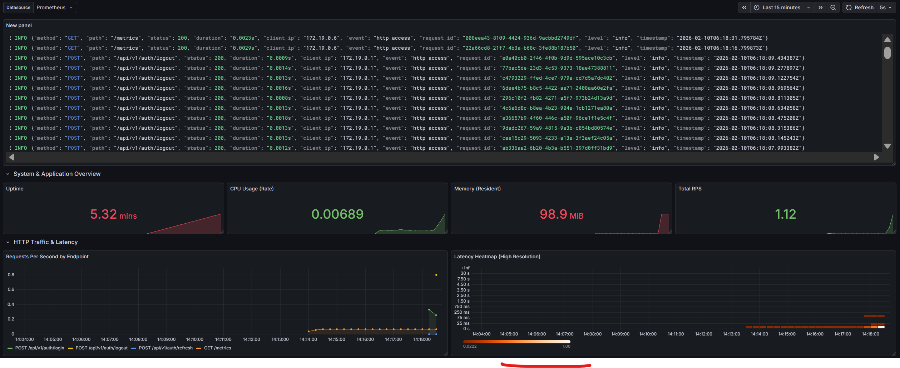

PROJECT
Identity and Auth Service FastAPI-Based Auth Service for Microservices
A practical centralized identity provider focused on secure token flows, user lifecycle management, and backend observability.
What This Project Provides
- Centralized identity provider with registration and user lifecycle management
- Argon2 password hashing and administrative auditing APIs
- JWT authentication with RS256 (RSA key pair)
- JWKS endpoint for public-key-based token verification across microservices
- First-party password login and refresh-token flow for internal clients
- Google OAuth login with PKCE/state validation
- User self-service APIs and admin user management APIs
- Redis-backed rate limiting via slowapi (moving window strategy)
- Redis-backed access-token blacklist for logout/session invalidation
- Celery-based background email tasks with Flower monitoring
- Observability stack with Prometheus, Grafana, Loki, and Promtail
Runtime Architecture
The service is designed for practical local deployment: Nginx terminates TLS and routes requests to identity-auth and identity-api services, while Redis and PostgreSQL back authentication, state, and persistence.
-
Authentication Request Flow
User authenticates via first-party password flow or Google OAuth.
Access token is issued (RS256 JWT), refresh token is stored in HttpOnly cookie.
Logout revokes tokens through Redis blacklist checks.
Microservices validate JWTs locally via JWKS public keys without sharing signing credentials.
-
Observability Flow
FastAPI and Redis metrics are scraped by Prometheus.
Container logs are collected by Promtail and queried in Loki.
Grafana dashboards visualize metrics and logs from the PLG stack.
API Surface
Auth endpoints: login, refresh, logout, Google login/callback, password recovery/reset, email verification, change password.
User endpoints: register, get current user, update profile, delete account.
Admin endpoints: list/get/update/delete users with self-delete protection.
Discovery endpoint: JWKS for inter-service token verification.
The API design emphasizes practical backend identity and auth operations rather than standards-complete identity-provider features.
Monitoring, Testing, and Auditability

- Docker Compose orchestrates Nginx, API services, PostgreSQL, Redis, Celery, Flower, Prometheus, Grafana, Loki, Promtail.
- k6 load-test scripts are included for auth throughput and latency profiling.
- Rate limiting is implemented with slowapi + Redis using a moving-window strategy and can be globally toggled via environment configuration.
- Loki is used for high-volume runtime logs; SQL audit table keeps durable actor/target/request trails.
- Email verification workflows are offloaded to Celery, while Flower is used to monitor task status and worker health.
Tech Stack
Python 3.12, FastAPI, SQLAlchemy 2.x, Pydantic v2, PostgreSQL, Redis, Celery, Flower, Prometheus, Grafana, Loki, Promtail, Docker Compose.
Project Notes
JWT signing depends on local RSA key files, and local HTTPS setup depends on generated self-signed certificates for Nginx. Some features also depend on external integration credentials (such as Google OAuth and SMTP).
This project focuses on practical backend identity/auth implementation for first-party services.